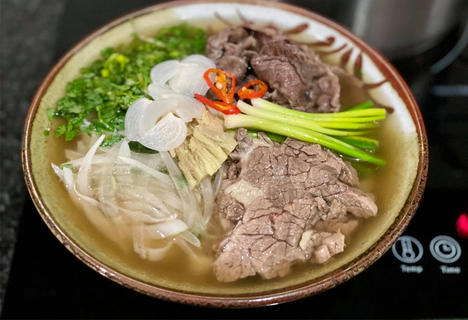

Recipe: Traditional Vietnamese Beef Pho

Ingredients:
- 1 pound beef sirloin, thinly sliced
- 8 cups beef broth
- 1 onion, thinly sliced
- 2-inch piece of fresh ginger, peeled and thinly sliced
- 2 cloves garlic, minced
- 1 cinnamon stick
- 2 star anise
- 1 teaspoon whole cloves
- 1 tablespoon fish sauce
- 8 oz dried rice noodles
- Fresh herbs (Thai basil, cilantro, mint)
- Lime wedges
- Sriracha sauce, hoisin sauce, and/or chili sauce for serving
Steps:
- In a large pot, char the onion and ginger over an open flame or in the broiler until lightly blackened.
- Add the beef broth, garlic, cinnamon stick, star anise, cloves, and fish sauce to the pot.
- Bring to a boil, then reduce heat and simmer for 30 minutes.
- Meanwhile, cook the rice noodles according to package instructions. Drain and set aside.
- Strain the broth and discard the solids.
- Divide the cooked noodles among serving bowls. Top with thinly sliced beef.
- Ladle the hot broth over the noodles and beef.
- Serve immediately with fresh herbs, lime wedges, and sauces on the side.
Watch the Video: